Drum lessons in Denver.
Pop and rock drumming, groove first. In your home or online. Founding rates from $60 an hour, every rate published.
Groove that makes a band feel good.
Drum lessons here are for playing songs and playing with people. We work on time, feel, and dynamics inside music you love, on your kit if you have one, on a practice pad and a plan if you don't yet.
The honest scope, up front: I play drums the way I use them, supporting bands in pop and rock at jams and on gigs. I don't claim jazz drumming. That's a wholly different technique that takes years of focus I've spent elsewhere. If you want grooves that make a band sound good, that I can teach, and I teach it from experience.
I learned on a blue sparkle Ludwig.
My dad was a drummer, so whatever house we lived in, his blue sparkling Ludwig kit sat in the basement, always set up, sticks on the floor. I banged on it as an elementary school kid. In sixth grade it became a ritual: come home from school, headphones on, and play along for hours. The Led Zeppelin box set. Abbey Road. A few years later, Stone Temple Pilots and Pearl Jam.
In college I drummed in the evening praise band, the one they let people loose in, and picked up the nickname Animal for being a little more expressive than they were used to.
Playing along feels great. That's the catch.
Here's something I learned from all those after-school hours. When you play along with headphones on, a wonderfully produced band fills your ears, and you're captured by the emotion of it. What you don't do is listen for your own shortcomings in technique and expression. It feels like practice, and half of it is.
That's the gap lessons close. You keep the joy of playing along, and you add a second ear that catches what yours can't yet. The same gap is why apps plateau, and the apps page goes deeper on that. Kids love drums, and kids' lessons run 45 minutes, in your home, with a parent home.
Hit something.
Kick, snare, hat, and crash, synthesized from scratch in your browser. Tap the pads or use Z X C V. Time and feel start with two hands and a pulse, and the patterns behind this page jump when you land one.
A toy, honestly. For the real thing, book a lesson.
The records from the basement.
The story above is real, so here's the actual shelf. The box set, the Beatles, and the two that showed up a few years later. Put one on, put headphones on, and play along. Then bring it to a lesson and we'll work on what your ears missed.
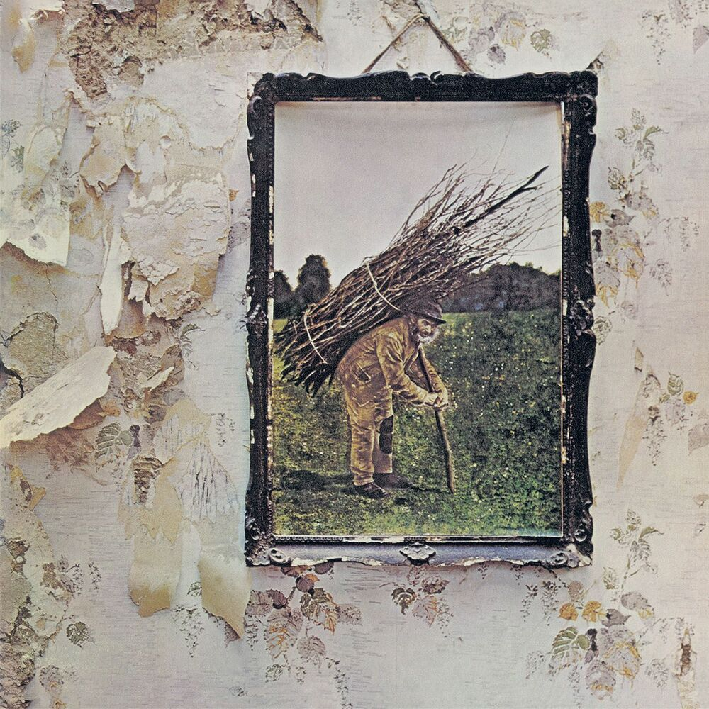

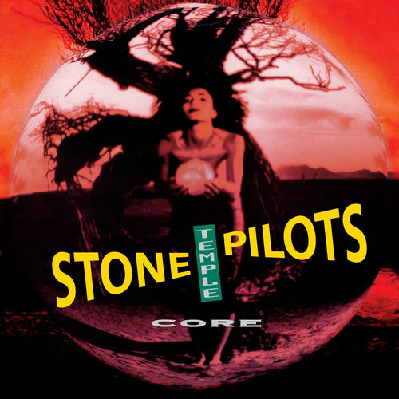
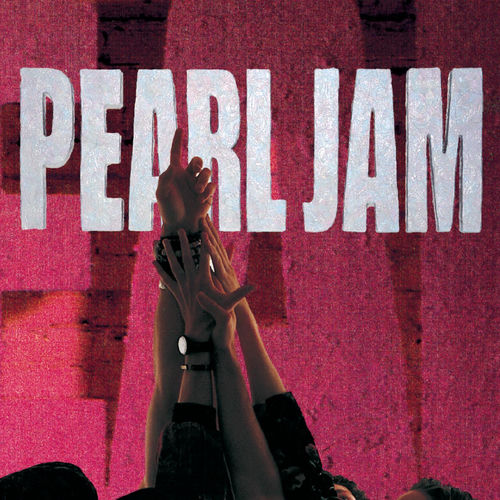
John Bonham, Led Zeppelin IV · Ringo Starr, Abbey Road · Eric Kretz, Core · Dave Krusen, Ten
Drummers who serve the song.
Different eras, same job: make the band feel good. Moon plays wild, Copeland plays tight, Barker plays fast, and every one of them plays for the song. Pick the one that sounds like where you want to go, and we'll start there.
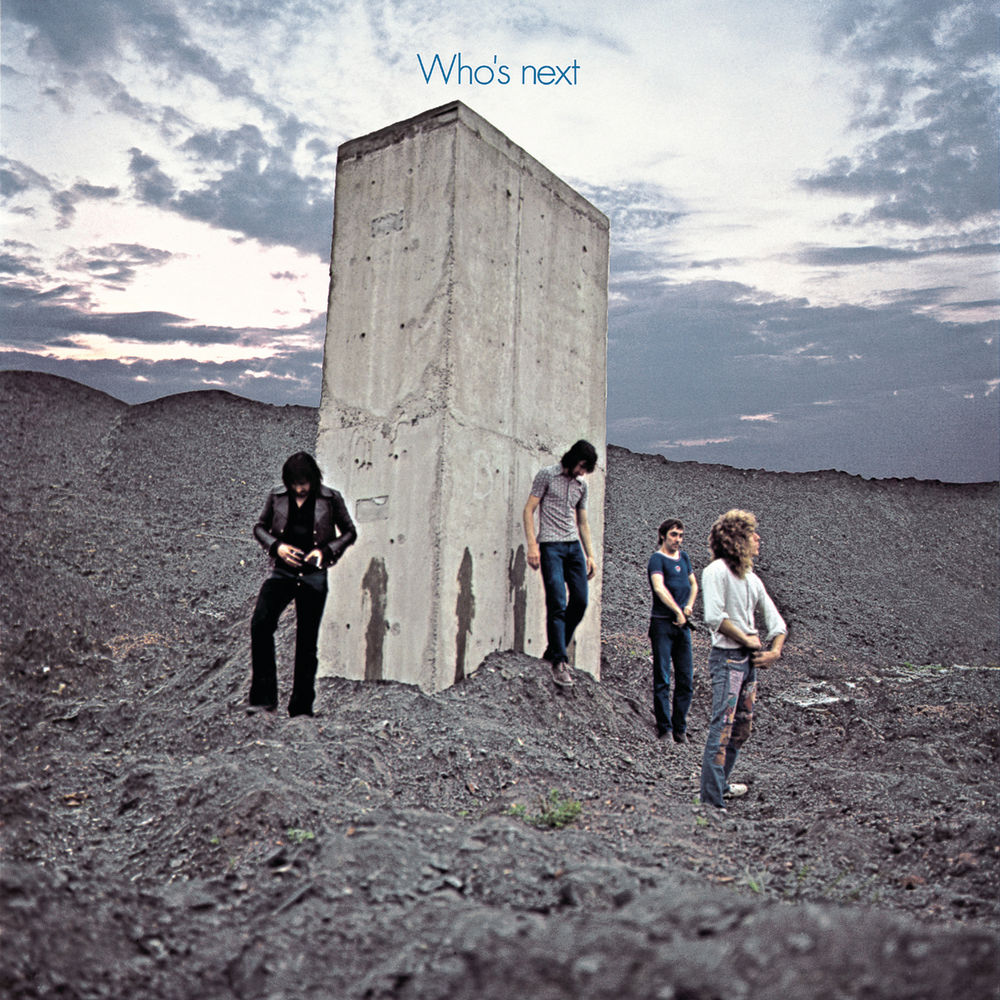
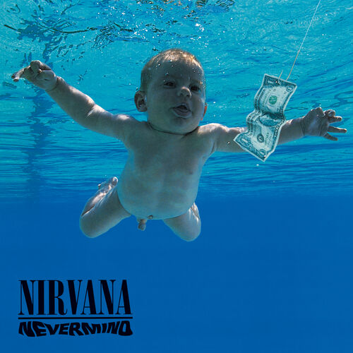
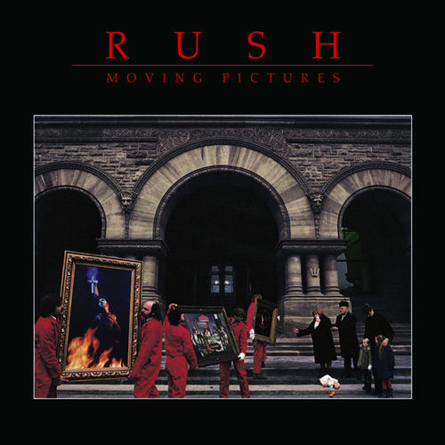
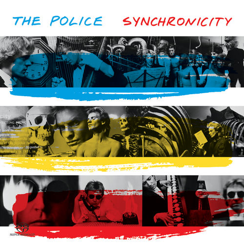
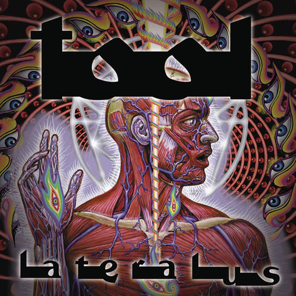
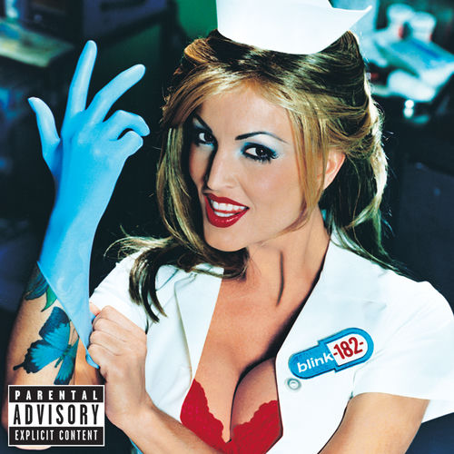
Keith Moon, Who's Next · Dave Grohl, Nevermind · Neil Peart, Moving Pictures · Stewart Copeland, Synchronicity · Danny Carey, Lateralus · Travis Barker, Enema of the State
Where the pocket lives.
Funk, soul, and hip-hop are the deepest listening a drummer can do. Most of it sounds simple and none of it is easy, which is the point. This is the shelf that teaches time and feel.
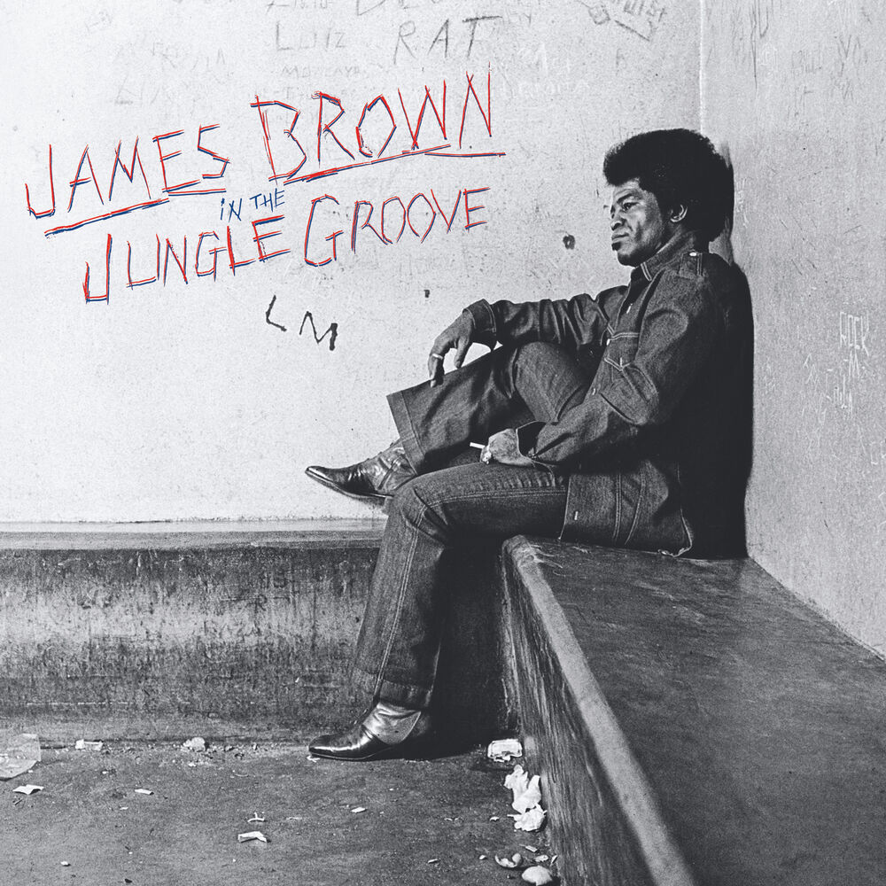
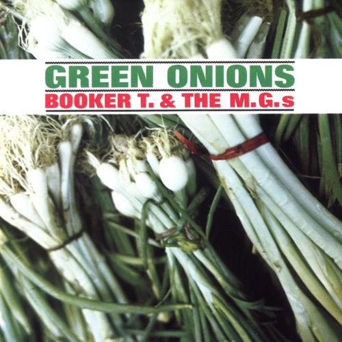
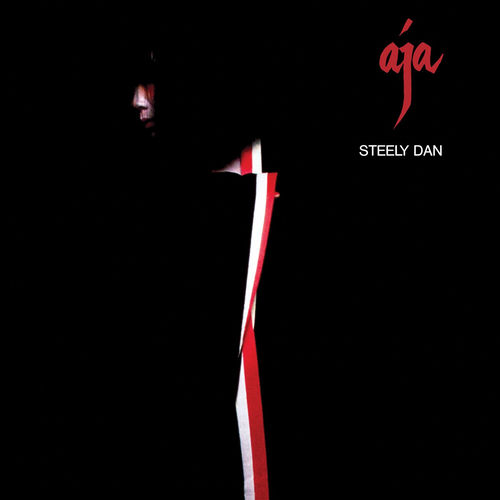
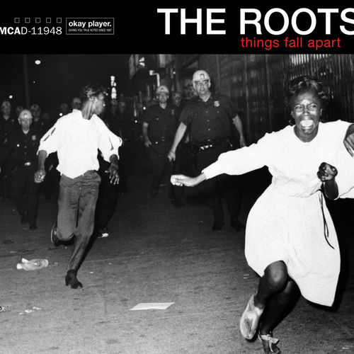
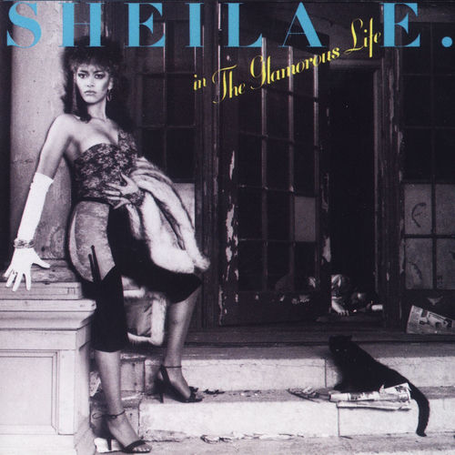
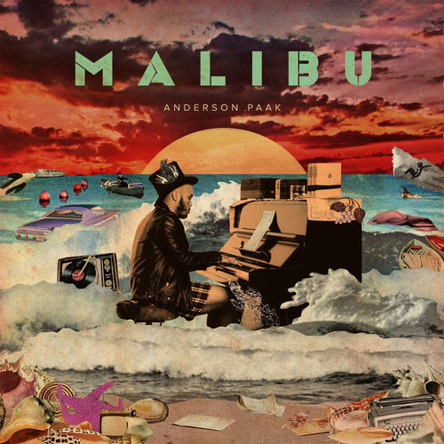
Clyde Stubblefield, In the Jungle Groove · Al Jackson Jr., Green Onions · Steve Gadd and Bernard Purdie, Aja · Questlove, Things Fall Apart · Sheila E., The Glamorous Life · Anderson .Paak, Malibu
I don't teach jazz drumming. Hear it anyway.
The honest scope from up the page holds: jazz drumming is not what I teach. Listen to it anyway, because this is where groove came from, and it will change how you hear everything else on this page.
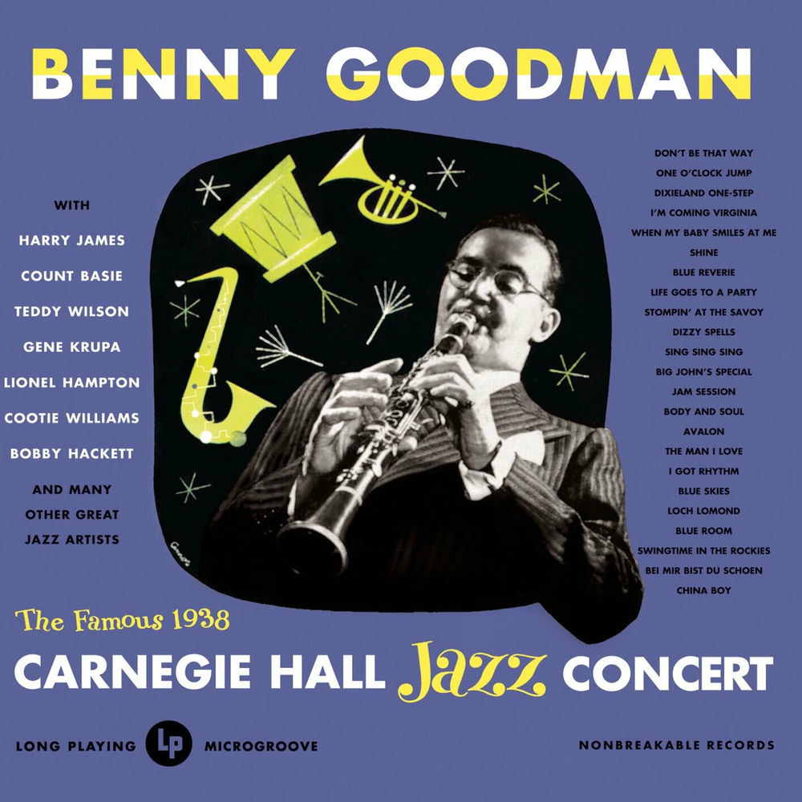
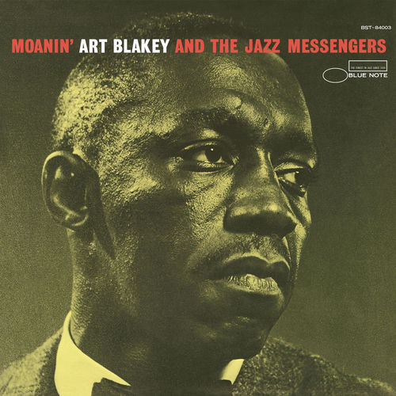
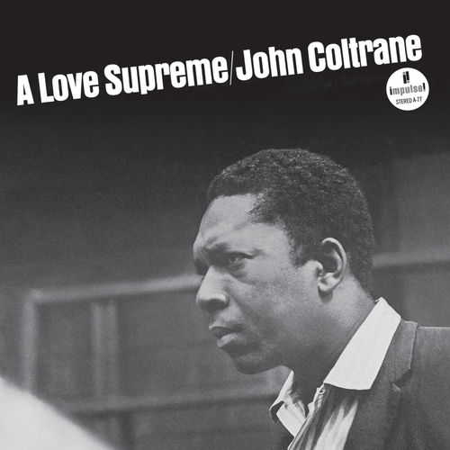
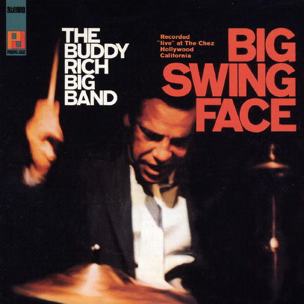
Gene Krupa, Carnegie Hall, 1938 · Art Blakey, Moanin' · Elvin Jones, A Love Supreme · Buddy Rich, Big Swing Face · Larnell Lewis, We Like It Here